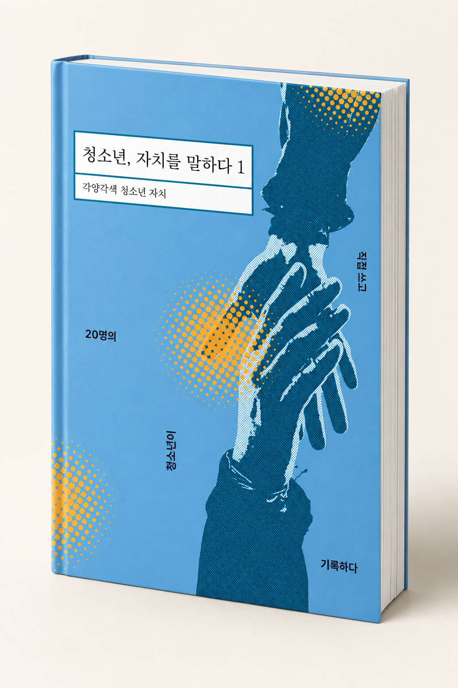
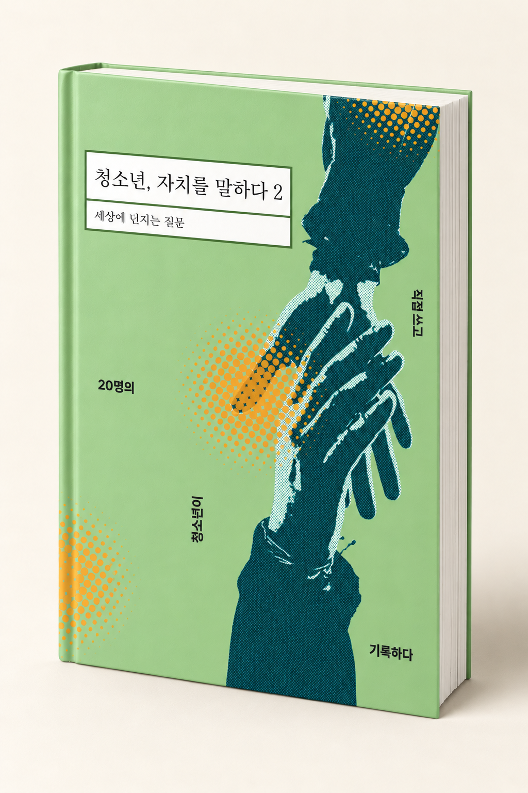

청소년 저자들과 함께한 자치도서 출간기념회
출간기념회에서 청소년 저자와 참가자들이 책에 담긴 자치 경험을 나눴습니다.
출간기념회에서 청소년 저자와 참가자들이 책에 담긴 자치 경험을 나눴습니다.

학교 안팎에서 생활과 배움의 방향을 스스로 고르고, 마을에서 발견한 문제를 제안으로 바꾼 경험을 모았습니다.

처음 회의에서 손을 든 순간부터 위원장이 된 뒤 도움을 구하기까지, 다른 사람과 함께 결정하는 경험을 모았습니다.

청소년과 활동가들이 자치의 경험을 나누고, 주도성을 키우는 데 어떤 지원이 필요한지 이야기했습니다.
청소년과 교사, 활동가가 만나 청소년 자치를 돕는 사람과 학교의 역할을 이야기합니다.
학교생활에서 느낀 불편을 함께 살피고, 학생들이 해결 방법과 예산을 논의했습니다.

청소년들이 학교생활에서 느낀 문제로 토론하고, 직접 만든 정책제안서를 전달했습니다.
길잡이가 하는 일
학교, 청소년기관, 마을에서 청소년이 의견을 내고 함께 결정할 수 있는 자리를 만듭니다.
학생자치와 회복적 서클 교육을 진행하고, 청소년이 직접 참여하는 프로젝트를 운영합니다.
청소년이 쓴 자치 이야기를 책으로 펴내고, 현장 경험을 토대로 교육 자료를 연구합니다.
학교와 마을의 문제를 청소년의 경험에서 출발해 살피고, 함께 만든 제안을 기관과 지역사회에 전합니다.
길잡이 소개
인천청소년자치학교 은하수학교에서 자치를 경험했던 청소년들이 졸업 후 길잡이교사로 활동을 이어갔습니다. 그 과정에서 함께 쌓은 경험이 자치교육사회적협동조합 길잡이로 이어졌습니다.
길잡이가 돕는 일
청소년이 문제를 발견하고 의견을 나눌 자리를 엽니다. 함께 정한 일을 실행하고 돌아볼 수 있도록 곁에서 돕습니다.
함께하기
새 활동의 모집 여부와 신청 방법을 확인할 수 있습니다.
행사 신청학교·기관에서 학생자치, 서클, 청소년 프로젝트를 함께 열고 싶다면 연락해 주세요.
홈페이지에서 문의하기길잡이의 활동과 조합 운영에 함께하고 싶다면 조합원 신청 안내를 확인해 주세요.
조합원 가입 안내자료실
후원 안내
후원은 청소년 자치 프로젝트와 공론장, 현장의 경험을 기록하고 나누는 일에 쓰일 수 있습니다.